DCFT: Density Cumulant Functional Theory¶
Code author: Alexander Yu. Sokolov, Andrew C. Simmonett, and Xiao Wang
Section author: Alexander Yu. Sokolov
Module: Keywords, PSI Variables, DCFT
Theory¶
Density cumulant functional theory (DCFT) is a density-based ab initio theory that can compute electronic energies without the use of a wavefunction. The theory starts by writing the exact energy expression in terms of the one- and two-particle density matrices (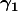 and 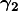):
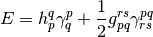
Here we used Einstein convention for the summation over the repeated indices, 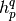 and 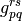 are the standard one- and two-electron integrals, 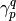 and 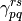 are the elements of and , respectively. Naively, one might expect that it is possible to minimize the energy functional in the equation above and obtain the exact energy. This is, however, not trivial, as the density matrix elements and cannot be varied arbitrarily, but must satisfy some conditions that make sure that the density matrices are N-representable, i.e. correspond to an antisymmetric N-electron wavefunction. Unfortunately, no simple set of necessary and sufficient N-representability conditions are known, and some of the known conditions are not easily imposed. In addition, the lack of separability of the density matrices may result in the loss of size-consistency and size-extensivity. In DCFT, one takes a different route and replaces in favor of its two-particle density cumulant:
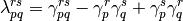
The one-particle density matrix is separated into its idempotent part 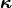 and a correction 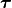:
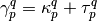
The idempotent part of corresponds to a mean-field Hartree-Fock-like density, while the non-idempotent correction depends on the density cumulant and describes the electron correlation effects. Inserting the above two equations into the energy expression, we obtain:
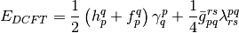
where the antisymmetrized two-electron integrals and the generalized Fock operator matrix elements were defined as follows:
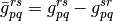
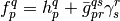
Energy functional 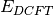 has several important properties. First, the energy is now a function of two sets of independent parameters, the idempotent part of () and the density cumulant (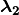). As a result, the energy functional is Hermitian, which is important for the evaluation of the molecular properties. The additive separability of the density cumulant guarantees that all of the DCFT methods are size-extensive and size-consistent. Furthermore, the N-representability problem is now greatly simplified, because the idempotent part of is N-representable by construction. One only needs to worry about the N-representability of the density cumulant, which is a relatively small part of .
In order to obtain the DCFT energy, two conditions must be satisfied:
1) The energy must be stationary with respect to a set of orbitals. This can be done by diagonalizing the generalized Fock operator (as in the DC-06 and DC-12 methods, see below), which introduces partial orbital relaxation, or by fully relaxing the orbitals and minimizing the entire energy expression (as in the ODC-06 and ODC-12 methods).
2) The energy must be stationary with respect to the variation of the density cumulant , constrained to N-representability conditions.
Making the energy stationary requires solution of two sets of coupled equations for orbitals and density cumulant, respectively (also known as residual equations). At the present moment, three different algorithms for the solution of the system of coupled equations are available (see section Iterative Algorithms for details).
Publications resulting from the use of the DCFT code should cite contributions listed here.
Methods¶
Currently five DCFT methods (functionals) are available: DC-06, DC-12, ODC-06, ODC-12, and ODC-13. The first four methods use approximate N-representability conditions derived from second-order perturbation theory and differ in the description of the correlated (non-idempotent) part of the one-particle density matrix and orbital optimization. While in the DC-06 and ODC-06 methods is derived from the density cumulant in an approximate way (labelled by ‘06’), the DC-12 and ODC-12 methods derive this contribution exactly, and take full advantage of the N-representability conditions (which is denoted by ‘12’). The corresponding DC and ODC methods have similar description of the N-representability, but differ in describing the orbital relaxation: the former methods account for the relaxation only partially, while the latter fully relax the orbitals. Both DC-06 and DC-12 methods have similar computational cost, same is true when comparing ODC-06 and ODC-12. Meanwhile, the DC methods are generally more efficient than their ODC analogs, due to a more expensive orbital update step needed for the full orbital optimization. In the ODC-13 method, the third- and fourth-order N-representability conditions are used for the density cumulant and the correlated contribution , respectively, and the orbitals are variationally optimized. For most of the applications, it is recommended to use the ODC-12 method, which provides an optimal balance between accuracy and efficiency, especially for molecules with open-shell character. If highly accurate results are desired, a combination of the ODC-13 method with a three-particle energy correction [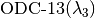] can be used (see below). For the detailed comparison of the quality of these methods we refer users to our publications.
The DCFT functional can be specified by the DCFT_FUNCTIONAL option. The default choice is the ODC-12 functional. In addition to five methods listed above, DCFT_FUNCTIONAL option can be set to CEPA0 (coupled electron pair approximation zero, equivalent to linearized coupled cluster doubles method, LCCD). CEPA0 can be considered as a particular case of the DC-06 and DC-12 methods in the limit of zero non-idempotency of . This option has a limited functionality and should only be used for test purposes. For the production-level CEPA0 code, see the description of the OCC section of the manual. The DCFT code can also be used to compute the 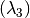 energy correction that perturbatively accounts for three-particle correlation effects, similarly to the (T) correction in coupled cluster theory. Computation of the correction can be requested by setting the THREE_PARTICLE option to PERTURBATIVE. A combination of the ODC-13 functional with the correction [denoted as ] has been shown to provide highly accurate results for open-shell molecules near equilibrium geometries.
At the present moment, all of the DCFT methods support unrestricted reference orbitals (REFERENCE = UHF), which can be used to perform energy and gradient computations for both closed- and open-shell molecules. In addition, the ODC-06 and ODC-12 methods support restricted reference orbitals (REFERENCE = RHF) for the energy and gradient computations of closed-shell molecules. Note that in this case restricted reference orbitals are only available for ALGORITHM = SIMULTANEOUS.
Iterative Algorithms¶
As explained in the Theory section, in order to obtain the DCFT energy one needs to solve a system of coupled equations for orbitals and density cumulant. At the present moment three iterative algorithms for the solution of the equations are available. The choice of the algorithm is controlled using the ALGORITHM option.
1) Simultaneous algorithm (ALGORITHM = SIMULTANEOUS, currently the default). In this algorithm the DCFT equations are solved in macroiterations. Each macroiteration consists of a single iteration of the cumulant update followed by a single iteration of the orbital update and orbital transformation of the integrals. The macroiterations are repeated until the simultaneous convergence of the cumulant and orbitals is achieved. Convergence of the simultaneous algorithm is accelerated using the DIIS extrapolation technique.
2) Two-step algorithm (can be invoked by setting the ALGORITHM option to TWOSTEP). In the two-step algorithm each macroiteration consists of two sets of microiterations. In the first set, the density cumulant equations are solved iteratively, while the orbitals are kept fixed. After the density cumulant is converged, the second set of microiterations is performed for the self-consistent update of the orbitals with the fixed density cumulant. Each macroiteration is completed by performing the orbital transformation of the integrals. As in the simultaneous algorithm, the DIIS extrapolation is used to accelerate convergence. Two-step algorithm is only available for the DC-06 and DC-12 methods.
3) Quadratically-convergent algorithm (set ALGORITHM to QC). The
orbital and cumulant update equations are solved using the Newton-Raphson
method. Each macroiteration of the quadratically-convergent algorithm consists
of a single Newton-Raphson update followed by the orbital transformation
of the integrals. The solution of the Newton-Raphson equations is performed
iteratively using the preconditioned conjugate gradients method, where only the
product of the electronic Hessian with the step vector is computed for
efficiency. By default, the electronic Hessian is build for both the cumulant and orbital
updates and both updates are performed simultaneously. Setting the QC_TYPE
option to TWOSTEP will perform the Newton-Raphson update only for the orbitals,
while the equations for the cumulant will be solved using a standard Jacobi update.
If requested by the user (set QC_COUPLING to TRUE), the electronic Hessian can include
matrix elements that couple the orbitals and the density cumulant.
The computation of these coupling elements increases
the cost of the macroiteration, but usually leads to faster convergence and is
recommended for open-shell systems.
It is important to note that the quadratically-convergent algorithm is not yet fully
optimized and often converges slowly when the RMS of the cumulant or
the orbital gradient is below  .
.
The choice of the iterative algorithm can significantly affect the cost of the energy computation. While the two-step algorithm requires a small number of disk-intensive 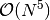 integral transformations, the simultaneous algorithm benefits from a smaller number of expensive 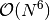 cumulant updates. As a result, for small closed-shell systems the two-step algorithm is usually preferred, while for larger systems and molecules with open-shell character it is recommended to use the simultaneous algorithm. Efficiency of the simultaneous algorithm can be greatly increased by avoiding the transformation of the four-index virtual two-electron integrals 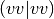 and computing the terms that involve these integrals in the AO basis. In order to do that one needs to set the AO_BASIS option to DISK (currently used by default). For more recommendations on the choice of the algorithm see Recommendations section.
Analytic Gradients¶
Analytic gradients are available for the DC-06, ODC-06, ODC-12, and ODC-13 methods. For DC-06, the evaluation of the analytic gradients requires the solution of the coupled response equations. Two algorithms are available for their iterative solution: two-step (default) and simultaneous. These algorithms are similar to those described for the orbital and cumulant updates in the Iterative Algorithms section and usually exhibit similar efficiency. The choice of the algorithm can be made using the RESPONSE_ALGORITHM option. For the DC-12 method the analytic gradients are not yet available, one has to use numerical gradients to perform the geometry optimizations. For the ODC-06, ODC-12 and ODC-13 methods no response equations need to be solved, which makes the computation of the analytic gradients very efficient. Analytic gradients are not available for the three-particle energy correction .
Methods Summary¶
The table below summarizes current DCFT code features:
Method Available algorithms Energy Gradient Reference ODC-06 SIMULTANEOUS, QC Y Y RHF/UHF ODC-12 SIMULTANEOUS, QC Y Y RHF/UHF ODC-13 SIMULTANEOUS, QC Y Y UHF 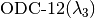 SIMULTANEOUS, QC Y N UHF SIMULTANEOUS, QC Y N UHF DC-06 SIMULTANEOUS, QC, TWOSTEP Y Y UHF DC-12 SIMULTANEOUS, QC, TWOSTEP Y N UHF
Note that for ODC-06 and ODC-12 REFERENCE = RHF is only available for ALGORITHM = SIMULTANEOUS. To compute correction, the THREE_PARTICLE option needs to be set to PERTURBATIVE.
Minimal Input¶
Minimal input for the DCFT single-point computation looks like this:
molecule {
H
H 1 1.0
}
set basis cc-pvdz
energy('dcft')
The energy('dcft') call to energy() executes the DCFT
module, which will first call the SCF module and perform the SCF computation
with RHF reference to obtain a guess for the DCFT orbitals. After SCF is
converged, the program will perform the energy computation using the ODC-12
method. By default, simultaneous algorithm will be used for the solution of
the equations. One can also request to perform geometry
optimization following example below:
molecule {
H
H 1 1.0
}
set basis cc-pvdz
optimize('dcft')
The optimize('dcft') call will first perform all of the procedures
described above to obtain the ODC-12 energy. After that, the ODC-12 analytic
gradients code will be executed and geometry optimization will be performed.
Recommendations¶
Here is a list of recommendations for the DCFT module:
- Generally, the use of the simultaneous algorithm together with the AO_BASIS = DISK option is recommended (set by default).
- In cases when available memory is insufficient, the use of the AO_BASIS = DISK option is recommended. This will significantly reduce the memory requirements. However, when used together with the two-step algorithm, this option can significantly increase the cost of the energy computation.
- In cases when the oscillatory convergence is observed before the DIIS extrapolation is initialized, it is recommended to increase the threshold for the RMS of the density cumulant or orbital update residual, below which the DIIS extrapolation starts. This can be done by setting the DIIS_START_CONVERGENCE option to the value greater than 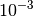 by one or two orders of magnitude (e.g. 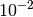 or 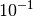). This can be particularly useful for computions using the ODC methods, because it can greatly reduce the number of iterations.
- If oscillatory convergence is observed for atoms or molecules with high symmetry, it is recommended to use the quadratically-convergent algorithm.
- When using the quadratically-convergent algorithm for the closed-shell molecules, it is recommended to set the QC_COUPLING option to FALSE for efficiency reasons (set by default).
- For the ODC computations, the user has a choice of performing the computation of the guess orbitals and cumulants using the corresponding DC method (set ODC_GUESS to TRUE). This can often lead to significant computational savings, since the orbital update step in the DC methods is cheap. Convergence of the guess orbitals and cumulants can be controlled using the GUESS_R_CONVERGENCE option.